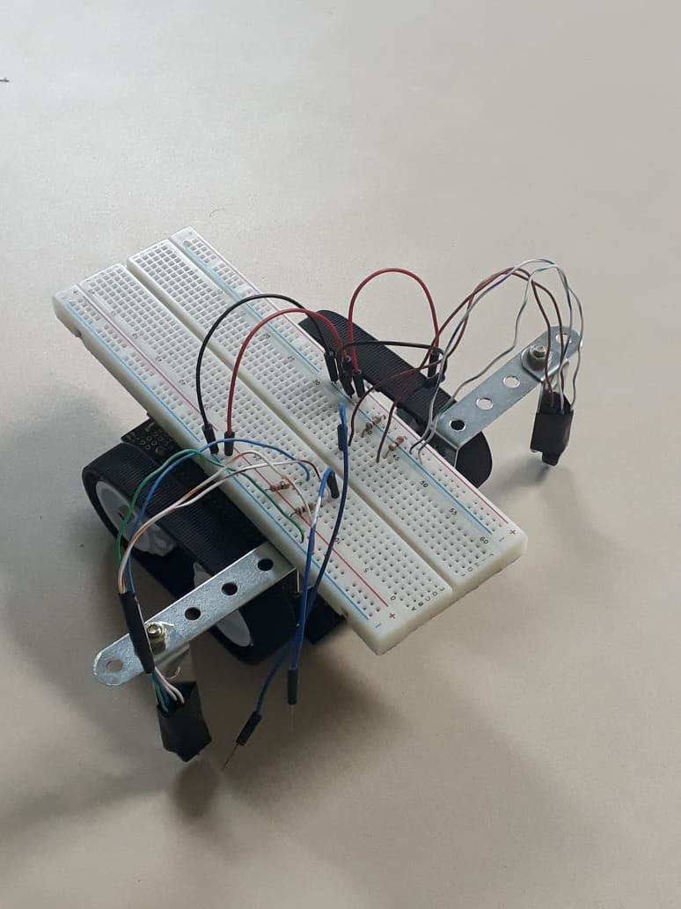

Agendamento para psicólogos
Um projeto criado para o Instituto Federal de Sergipe para atender demandas dos psicólogos
É um projeto feito em 2020 por minha autoria sob supervisão do Instituto Federal de Sergipe, é um projeto viando facilitar o dia a dia dos psicólogos que demandam de um tráfego muito intenso de pessoas, o projeto conta com uma API feita em Node.Js, uma página web feita em React e uma aplicação feita em React Native
Aplicativo L2
Um projeto criado juntamente com o grupo de pesquisa GRUFEE para auxiliar surdos
É um projeto feito em 2019 cujo objetivo é voltado para o auxílio de deficientes auditivos, o aplicativo conta com séries de quizzes e perguntas relacionado ao aprendizado em forma de gamificação, o aplicativo foi feito em linguagem web (HTML,CSS e JavaScript (JQuery)) e transformado em APK com o auxílio do framework Cordova)
Robôs reativos seguidores de linha
Um projeto criado por iniciação científica utilizando arduino
É um projeito feito através do PIBIC, cujo objetivo era criar um robô utilizando arduino para seguir linhas demarcadas em uma pista reta utilizando sensores de proximidade e cor
